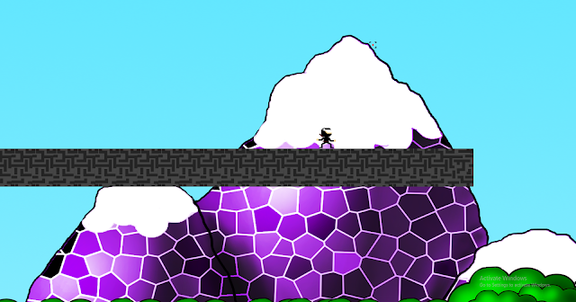

Game Dev Portfolio
Hello, I'm Welby Chan and this is a Game Dev Portfolio that contains much of my developed games. To learn more about me, read my artist's statement.

Blink, GoDot Engine, Academic
"Blink" was the first video game I had ever created with an academic grading.
I was the artist and designer. Brandon Zhou was the programmer and manager.
We got the music from Ross Bugden in YouTube creative commons.
Even though I was the artist and desginer, I also helped with programming when my partner had no time.
I fixed bugs and designed the entire map. Although there were many things we wanted to add, we
were under a time constraint and never finshed. I plan on making a sequel of this game which
will implement the scrapped ideas I had.
The download link to the installer is
here
Rescue Eve, GoDot Engine, Academic
"Rescue Eve" is another game I helped created with an academic grading.
I was an artist and designer. I helped with a little bit of coding such as movement.
This game is about a funky dancing robot. He is on a journey to locate his companion.
It is a action platformer with an odd disco dancing theme.
There are only 5 levels of the game. Others who also worked on this project were
Linhson(Programmer), Jed(Programmer), and Alison(Artist).
The download link to the installer is
here